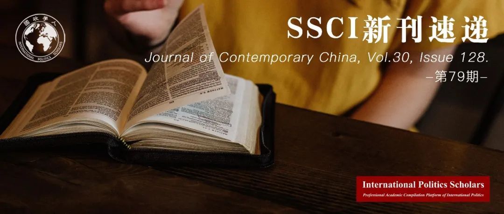

收录于合集 #新刊速递 123个

期刊简介
《当代中国》（ Journal of Contemporary China ）是关于当代中国问题研究、涵盖多学科的同行评议学术刊物，由劳特利奇（Routledge）出版社每年出版发行五期，内容包括但不限于中国政治、法律、经济、文化与外交政策研究。刊物现任主编为赵穗生（Suisheng Zhao, 美国丹佛大学约瑟夫·科贝尔国际关系学院教授）。刊物影响因子为2.345（2019-2020年）。
本期编委
【编译】 张彦赬、陈想、王嘉许、何伊楠
【校对】 谢菁
【审核】 赖永祯
【排版】 韩柯
【美编】 马颖

本期目录
1.集体行动和中国政府民意反馈的悖论
The Paradox of Responsiveness and Social Protest in China
2. 当代中国的农村改革：发展、效率与公平
Rural Reform in Contemporary China: Development, Efficiency, and Fairness
3. 当前中国对国际机构的治理策略：亚投行符合中国利益吗？
China’s Institutional Statecraft under Beijing: Has the AIIB Served China’s Interest?
4.新形势下中国对全球治理改革的叙事策略
China’s Strategic Narratives in Global Governance Reform under Beijing
5.在“中国中心”和“中国转移”之间：“一带一路”倡议是新生世界秩序的结构与概念吗？
China’s Belt and Road Initiative as Nascent World Order Structure and Concept? Between Sino-Centering and Sino-Deflecting
6. 降低国内政治经济的脆弱性：中国“一带一路”倡议的理由与效果
The Rationale and Effects of China’s Belt and Road Initiative: Reducing Vulnerabilities in Domestic Political Economy
01
集体行动和中国政府民意反馈的悖论
【题目】 The Paradox of Responsiveness and Social Protest in China
【作者】 Siyao Zheng（郑思尧），清华大学公共管理学院硕士研究生（现为清华大学社会科学学院政治学系博士研究生），主要研究领域包括比较政治制度、信息政治学和政治学研究方法；
Tianguang Meng（孟天广），清华大学社会科学学院政治学系副教授，清华大学苏世民书院兼职教授。同时也是清华大学数据治理研究中心主任和计算社会科学平台执行主任。主要研究领域包括比较政治制度、公众舆论与国家回应性、信息政治学和计算社会科学，曾在《比较政治研究》（Comparative Political Studies）、《治理》（Governance）、《全球环境变化》（Global Environmental Change）和《社会科学研究》（Social Science Research）等刊物发表文章。
【摘要】 先前的研究认为，反馈民意（responsiveness）是中国政府缓和公众集体行动的有效机制，该机制发挥效用的前提是只要政府提供更多反映诉求的制度化渠道，公众就会采用这一渠道。作者对此进行驳斥，并认为制度化和非制度化渠道并非互为替代，而是互补关系。同时，政府增加对公众通过制度化渠道参与政治的反馈频次，反而可能引发更多的集体行动。作者独自收集了一个数据集，并使用机器学习方法（machine- learning）来检验地方政府反馈民意的质量。作者发现政府反馈民意的增加对集体行动有正相关效应，导致这一相关性的主要机制则是公众相信政府具有处置集体行动的意志发生了变化。研究结果表明，即使有新的制度化渠道，它们对非制度化政治参与可能没有预期的替代效应，因此威权吸纳可能会产生意外后果。
Prior studies regard responsiveness as an effective institution for Chinese government to mitigate social protests based on the premise that citizens adopt more institutionalized channels as soon as the regime makes it available. We challenge this notion by arguing that institutionalized and noninstitutionalized channels are not substituting but complements, and improving responsiveness to institutionalized participation may ironically lead to more protests. We collected a unique dataset and employed machine- learning to measure the quality of local responsiveness. We find that improving responsiveness has a positive effect on protests and identify updating citizens’ beliefs on repression as major mechanism. The findings suggest the availability of new institutionalized channels may not have the intended substitutive effects on noninstitutionalized participation, and thus authoritarian co-optation could have unintended consequences.
【编译】 何伊楠
【校对】 谢菁
02
当代中国的农村改革：发展、效率与 公平
【题目】 Rural Reform in Contemporary China: Development, Efficiency, and Fairness
【作者】 Yongji Xue（薛永基），北京林业大学经济与管理学院教授。他的研究领域为农业领域创新和企业研究、农业市场营销。
KuoRay Mao，科罗拉多州立大学社会学院副教授。他的研究关注社会和生态紊乱如何塑造 东亚的资源和风险分配，以及结构性不平等。
Nefratiri Weeks，科罗拉多州立大学社会学院博士研究生。
Jingyi Xiao，北京林业大学经济与管理学院研究助理（Research Assistant）。
【摘要】 本文考察了1978年以来中国农村改革中出现的矛盾，通过研究周期性的政策实施、结构性转型以及经济、社会、环境成果，本文追溯了农村改革政策演变的四个阶段。文章提出，农村改革的矛盾深深根植于相互抵牾的改革目标中，尤其是实现农村现代化的目标和居民间公平分配资源的目标。此外，中央政府不断地通过自上而下的运动式治理模式，造成短期内完成指标与长期内可持续的结构调整政策两个目标的矛盾。研究表明，中国农村转型中显现的社会环境的矛盾必须放在特定的全球政治经济背景中分析，而这种全球政经背景鼓励以增长和效率为中心的发展战略。
This article examines the contradictory outcomes of China’s rural reform since 1978. It traces four periods of rural reform policies through cyclical rounds of policy implementation, structural transformations, and economic, social, and environmental outcomes. The analysis reveals that contradictory outcomes are embedded within conflicting goals framing rural reform policies, specifically goals to modernize China’s rural regions and fair resource allocation among its inhabitants. In addition, the Chinese central government has repeatedly resorted to a top-down, campaign-style approach, creating conflicting objectives between short-term quota fulfillment and sustainable structural adjustment policies. The research suggests that the socio- environmental contradictions emerging from rural transformations in China must be viewed within the global political economic context that favors growth oriented, efficiency-based development strategies.
【编译】 王嘉许
【校对】 谢菁
03
当前中国对国际机构的治理策略：亚投行符合中国利益吗？
【题目】 China’s Institutional Statecraft under Beijing: Has the AIIB Served China’s Interest?
【作者】 Wei Liang，美国明德大学蒙特雷国际研究学院教授，专业领域包括国际贸易和发展政策、全球经济和环境治理、国际谈判、东亚政治经济以及中国经济外交政策等。
【摘要】 本文分析了中国在建立新型国际机构以在全球范围促进其利益上付出的努力。亚洲基础设施投资银行（AIIB）为中国提供了一个由其领导的多边发展银行（MDB）的机会，从而推广了中国就何以改善现有世界秩序这一问题上的愿景。在过去五年里，亚投行的运作发生了变化。起初，中国的首要任务是采取一系列前瞻性举措保证亚投行的成功运行。但近来中国政府采取了更大胆的做法，即将一套新观念、规范、原则和实践纳入亚投行的项目选择与实施中，并侧重于效率和灵活性，减少繁文缛节和墨守成规，以及在对参与借款的发展中国家提供更为平等的参与机会。
This article examines China’s efforts to launch new international institutions in order to advance its interests globally. The Asian Infrastructure and Investment Bank (AIIB) presents an opportunity for China to create a China-led Multilateral Development Bank (MDB) to promote its vision of how to improve the existing world order. The operation of the AIIB has evolved in the last five years. Beijing’s priority at the initial stage was to exercise precaution to ensure its success. More recently, Beijing has adopted a bolder approach to embed a new set of ideas, norms, principles and practices into the AIIB project selection and implementation with an emphasis on efficiency and flexibility, less formality and legality, and more equal participation of the borrowing developing countries.
【编译】 张彦赪
【校对】 谢菁
04
新形势下中国对全球治理改革的叙事策略
【题目】 China’s Strategic Narratives in Global Governance Reform under Beijing
【作者】 Yi Edward Yang，美国詹姆斯麦迪逊大学政治科学教授
【摘要】 中国长期以来一直寻求塑造关于中国的全球叙事。当前的中国政府不仅持续这一努力，还增加了一个全新方针：即寻求运用话语权，尤其通过阐述和推广战略性叙事的方式来重塑国际体系本身。借助社会身份理论（SIT）和策略性叙事框架（strategic narratives framework），本文说明中国在不同的全球治理领域采用多层面的叙事策略来重新定义现有规范或创建新的规范。文中提出一个理论框架用于解释这一策略，并随后用这一框架说明中国在国际体系层面和三个全球治理领域（即气候变化、人权和互联网治理）的策略性叙事。
Beijing has long sought to shape global narratives about China. The Beijing administration not only continued that effort but also added an entirely new dimension: it now seeks to use discourse power, particularly through formulating and promoting strategic narratives, to reshape the international system itself. Drawing upon social identity theory (SIT) and strategic narratives framework, this study shows that Beijing employs a multifaceted narrative strategy to redefine existing norms or create new ones in varied global governance domains. A theoretical framework is presented to explain the strategy and subsequently applied to illustrate China’s strategic narratives at the international system level and in three global governance areas, i.e., climate change, human rights, and Internet governance.
【编译】 陈想
【校对】 谢菁
05
在“中国中心”和“中国转移”之间：“一带一路”倡议是新生世界秩序的结构与概念吗？
【题目】 China’s Belt and Road Initiative as Nascent World Order Structure and Concept? Between Sino-Centering and Sino-Deflecting
【作者】 Ray Silvius，加拿大温尼伯大学副教授，主要研究非西方国家政治经济崛起所带来的全球政治经济内部变化，曾出版著作《多极化秩序下的文化、政治经济和文明：以俄罗斯为例》（ Culture, Political Economy and Civilization in a Multipolar World Order: The Case of Russia ）。
【摘要】 本文认为，中国认可的“一带一路”倡议的描述是具有世界秩序意义的中国大政方针的概念工具。中国政府通过面向公众的文件和演讲，组织和塑造“一带一路”倡议的理念一致性和连贯性。这些举措表现出一种具有双重时间逻辑的“中国中心”（Sino- centering）和“中国转移”（Sino- deflecting）的战略。首先，“丝绸之路”被誉为中国主导下的多元文明的历史成就；其次，“一带一路”倡议是丝绸之路传统的当代体现：技术上复杂的基础设施和经济治理机制，旨在为参与国创造“双赢”。本文认为，这些对“一带一路”倡议以及对该倡议地位的描述，是中国在全球扩张其经济结构的产物。
This article considers Chinese state-sanctioned representations of the Belt and Road Initiative (BRI) as the conceptual apparatus of a Chinese state project with world order significance. The Chinese state organizes and produces ideational consistency and coherence for the BRI through publicly oriented documents and speeches. Such undertakings exhibit a Sino-centering and Sino-deflecting strategy with a dual temporal logic. First, the ‘Silk Road’ is extolled as an historical achievement of multiple civilizations under Chinese stewardship. Second, the BRI is presented as the contemporary manifestation of a Silk Road tradition: technically complex infrastructure and economic governance mechanisms designed as a ‘win-win’ endeavor for participating members. This article considers these representations of the BRI alongside the initiative’s standing as an expansion of China’s global economic structures.
【编译】 何伊楠
【校对】 谢菁
06
**** 降低国内政治经济的脆弱性：中国一带一路倡议的理由与效果
【题目】 The Rationale and Effects of China’s Belt and Road Initiative: Reducing Vulnerabilities in Domestic Political Economy
【作者】 Hongyi Lai，英国诺丁汉大学政治与国际关系学院副教授
【摘要】 现有文献表明，中国一带一路倡议的理由是刺激海外基础设施投资，从而带动国内经济增长，促进与亚欧大陆的经济联系以及与美国的重返亚太政策抗衡。本文认为，就国内政治经济这一角度，“一带一路”倡议（BRI）旨在解决以下三个可能阻碍中国经济增长并威胁其政治制度的脆弱环节——工业产能过剩；通过海运而非更安全的陆路运输进口大量能源；以及西部地区的欠发达状态。解决这些脆弱环节有助于维持中国高度依靠投资和出口、保护国有企业以及大量能源投入为特征的经济模式。2012年后的数据显示“一带一路”倡议已部分缓解了这些脆弱环节。
The existing literature suggests that China’s rationale for the belt and road initiative was to stimulate infrastructural investment abroad and thus economic growth at home, foster economic ties with Eurasia, and counter the US pivot to Asia. Employing a domestic political economy perspective, this article suggests that the Belt and Road Initiative (BRI) aimed to address China’s three following vulnerabilities that could derail its economic growth and threaten its political regime—industrial surplus capacity, massive imports of energy through maritime transport instead of safer land routes, and under- development of the western region. Addressing these vulnerabilities helps to sustain China’s economic model characterised by heavy reliance on investment and exports, protection of state firms, and massive energy input. Post-2012 data suggest that the BRI has partially mitigated these three vulnerabilities.
【编译】 陈想
【校对】 谢菁
好好学习，天天“在看”
国政学人
支持学术公益与知识传播
微信扫一扫赞赏作者 __赞赏
已喜欢，对作者说句悄悄话
取消 __
发送给作者
发送
最多40字，当前共字
上一页 1/3 下一页
长按二维码向我转账
支持学术公益与知识传播
受苹果公司新规定影响，微信 iOS 版的赞赏功能被关闭，可通过二维码转账支持公众号。